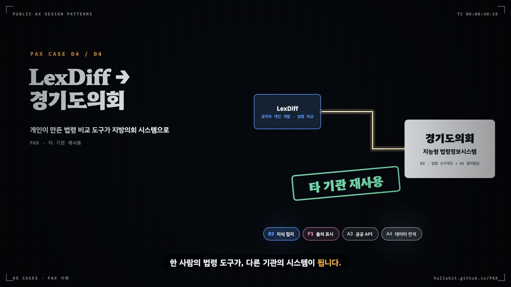

태깅·검증·참조 구현 레지스트리
카탈로그는 과제에 씌워 볼 때마다 고쳐진다. 과제 하나를 부품 목록과 배선으로 기록하는 태깅 규칙, 그 기록을 거르는 검증기, 태거가 남긴 피드백이 판정 규칙을 고치는 순환, 잘 만든 부품을 모아 두는 참조 구현 레지스트리를 차례로 다룬다.
- 태깅 결과 파일의 필드와 각 필드의 판정 규칙을 설명한다
- 원장 요약·README·4축 평가 같은 공개 자료만으로 PAX 사례 하나를 태깅한다
- 검증기의 INVALID와 WARN이 무엇을 뜻하고 각각 어떻게 다뤄야 하는지 구분한다
- 태깅 피드백이 카탈로그 개정으로 이어진 경로를 2판의 신규 76건 태깅까지 추적한다
- 참조 구현 레지스트리를 다음 과제 설계의 벤치마크로 쓰고, 기관 안에서 태깅을 운영한다
PAX 사례를 태깅하는 사람이 손에 쥐는 재료는 많지 않다. 원장에 실린 요약 몇 줄과 태그, 사례 링크에 걸린 README나 소개 페이지, PAX 4축 평가 결과가 전부다. 그 재료로 사례 하나를 부품·구현 상태·환경 조건·배선으로 다시 적는다. 지침은 한 가지를 더 요구한다. 카탈로그가 사례에 맞지 않는 지점을 반드시 적으라는 것이다. 카탈로그 v0.6으로 PAX 459건을 처음 전수 태깅했을 때 이 칸에 879건이 쌓였다. 경로 최적화 같은 비학습 알고리즘 도구나 화면 매크로 재생기가 B0과 B2 어디에도 맞지 않는다는 지적이 여러 사례에서 되풀이됐고, 그 지적이 v0.7의 B0 변형 확장(R15)이 되었다.
2판을 준비하며 아카이브에 새로 들어온 76건을 같은 지침으로 태깅했다. 이로써 PAX 557건 전체가 같은 스키마의 태깅 파일을 갖는다. 태깅 파일의 칸과 그 칸을 채우는 판정 규칙, 파일을 거르는 검증기는 한 줄로 이어진다. 여기에 태거의 피드백과 태거가 지목한 참조 구현이 붙어 순환이 된다. 가람시 AX팀은 이 순환을 기관 규모로 줄여 돌린다.
15.1 태깅이 기록하는 것
태깅은 사례 하나를 카탈로그의 부품으로 다시 적는 일이다. 결과는 사례마다 JSON 파일 하나이고, PAX 사례는 evaluations_pattern_pax/<사례 id>.json에 쌓인다. 스키마는 docs/pattern_schema.json 하나다. PAX 파일은 id가 원장의 16자리 hex이고 source: "pax" 필드가 붙는다. 근거 인용의 쪽수(page)는 0으로 두고 요약·README 문장을 그대로 옮긴다. 557건이 모두 같은 스키마를 쓰므로 부품별 사용례와 참조 구현을 아카이브 전체에 걸쳐 한 번에 센다. 표 15.1은 스키마의 필수 필드와 각 필드를 채우는 규칙이다.
| 필드 | 담는 것 | 판정 규칙 |
|---|---|---|
| workflow | 주 부품 1개(primary), 보조 부품(secondary), 변형(variant) | R1 가치 흐름 규칙. 사람이나 국민이 최종으로 받는 산출물을 만드는 B가 주 부품이다. |
| control_flow | B′ 제어 흐름 원형 | 원문에 배선이 드러난 것만 적는다. |
| platform | A 공통 서비스 | 해당하는 것 전부. A2는 변형(A2.0~A2.6) 하나 이상으로 적는다. |
| operational | C 운영 부품을 present · implemented · planned로 | 구현 상태 3단계(R3·R12). 1회 이상 작동 기록이 있어야 present. PAX 사례는 공개 자료에 운영이 명시된 것만. |
| security | S 보안 부품, untrusted_inputs, rule_check | S4·S5·S6은 도구 호출이나 시스템 쓰기가 있을 때만 판정한다. 신뢰 불가 입력 규칙의 결과를 rule_check에 적는다. |
| interaction | F 상호작용 부품 | 화면·기능으로 명시된 것만. |
| blocks · service_type | D 서비스 블록 1~2개, 서비스 유형 1개 | 대민이면 D1~D7, 내부면 D8.x. 유형은 v0.6 열네 종 가운데 하나. |
| environment | E 다섯 축(배포망, 네트워크, 모델 의존, 실행 형태, 권한 범위)과 데이터 등급 | 모르면 미확인. 권한은 근거가 없으면 낮게 잡는다. |
| transition | 전이 단계와 차단 요인 | 개인 사용 → 부서 공유 → 기관 공식 → 타 기관 재사용 → 범정부 탑재. 미착수와 구현·미배포도 있다. |
| wiring | 부품 사이 흐름 4~8개 | A1→B1 형식. 양끝은 이 파일에 태깅된 부품이어야 한다. |
| reference_candidate | 다른 기관이 가져다 쓸 만한 부품 하나와 이유 | 없으면 null. |
| anti_patterns | 해당하는 X | 원문 근거가 있을 때만. |
| rationale · evidence | 판단 이유 80자 이상, 원문 인용 2~5개 | 인용은 요약·README에 실제로 있는 문장만. 300자 이내. |
| catalogue_feedback | 누락 패턴, 모호한 경계, 수정 제안 | 없으면 빈 배열. 카탈로그를 검증하는 통로다. |
표에서 가장 오해받는 필드는 environment다. 환경 조건은 부품과 따로 기록한다. 폐쇄망·로컬 모델·MCP·권한 범위는 어느 부품 안에도 숨기지 않는다. 그리고 모르는 값은 미확인으로 적는다. 아니오와 미확인은 다르다. 공개 요약만 있는 PAX 사례에서 배포망이 미확인으로 남은 사례가 557건 가운데 184건에 이르는 것도 이 원칙 때문이다.
15.2 판정 절차
PAX 태깅 지침(docs/PAX_패턴_태깅_지침.md)은 공통 태깅 지침의 열두 단계 골격을 그대로 쓰고, 공개 자료만 있는 사례를 다루는 요령을 더한다. 바탕에 깔린 것은 PAX의 원칙 하나다. 근거가 없으면 미확인으로 두고 상위 판정을 유보한다. 표 15.2가 그 요령이다.
| 단계 | 쓰는 것 | 요령 |
|---|---|---|
| 입력 | 원장 필드(제목·요약·태그·기관·사례 구분·업무 분류·실행 환경·네트워크·모델 의존·배포망·전이 단계·사례 URL)와 PAX 4축 평가(AX 단계, S·C·M·P, 인간 통제·피드백·복원력) | 배정된 id의 행만 읽는다. |
| 보강 | 사례 URL이 GitHub·공공 깃랩·공개 서비스면 README나 소개 페이지 | 한 사례에 URL 하나, 한 번만 읽는다. 실패하면 요약만으로 판정하고 rationale에 "URL 미확인"을 적는다. |
| 주 부품 | 이용자(공직자·시민)가 최종으로 받는 산출물(R1) | 모델 의존이 없음(비LLM)이면 B0이 기본이다. MCP 서버 자체는 B0의 MCP 도구 제공 변형, 스킬·프롬프트 팩은 B1 스킬 코파일럿과 A9로 적는다. |
| 운영·보안 부품 | 공개 자료에 구현·운영이 명시된 것 | 4축의 인간 통제·피드백·복원력이 "부분 확인"이면 implemented, "미확인"이면 태그하지 않는다. |
| 환경 조건 | 원장 필드 | 그대로 옮긴다. 권한 범위는 PAX P축을 쓰되 v0.6 판정 문장으로 보정한다. |
| 전이 단계 | 원장의 전이 단계 | 없으면 사례 구분으로 추정한다(개인 개발 → 개인 사용, 커뮤니티 → 부서 공유, 기관 공식 → 기관 공식). |
| 피드백 | 개인 도구·MCP·스킬·브라우저 확장처럼 PAX 특유의 빈칸 | 카탈로그가 맞지 않는 지점을 적는다. 없으면 빈 배열. |
그림 15.1은 열두 단계를 열 단계의 흐름도로 줄인 것이다.
그림의 열 단계 가운데 태거의 판단이 갈리는 곳은 세 군데다.
주 부품: 가치 흐름이 우선순위표를 이긴다
v0.5까지는 B 부품이 둘 이상 해당하면 우선순위표(B6 → B3 → B5 → B4 → B8 → B7 → B2 → B1 → B0)로 하나를 골랐다. 이 방식은 기술 이름에 끌려간다. 에이전트 필드가 참이면 B6, RAG를 쓰면 B3이 되는 식이다. v0.6은 규칙을 뒤집었다.
B6에는 요건이 하나 더 붙는다. 복수 LLM 역할, 도구 호출 루프, AI의 계획·도구 선택이 모두 있어야 B6에이전트 오케스트레이터다. 고정 순서 파이프라인은 B′1을 가진 B1이나 B4로 적는다. PAX 557건에서 B6을 주 부품으로 받은 사례는 11건뿐이다. PAX 태깅에서는 MCP 서버 자체를 B0의 변형인 MCP 도구 제공으로 적는다. 서버는 결정적 도구이고 AI는 호스트 쪽에 있기 때문이다. 이 규칙과 비LLM 도구는 B0이 기본이라는 규칙이 겹쳐, 557건 가운데 390건의 주 부품이 B0이다.
운영 부품: 구현 상태 3단계
운영 부품은 태깅에서 가장 부풀기 쉬운 계층이다. README에 "이용자 의견을 받아 계속 개선한다"는 문장이 있으면 C6환류 파이프라인을 태깅하고 싶어진다. v0.5는 C6·C7의 present를 AX 하위점수와 연동했는데, 이 연동이 운영 증거 원칙과 충돌한다는 태깅 피드백이 쌓이자 v0.6은 구현 상태를 세 단계로 나눴다.
구현 상태를 나누면 운영 부품의 숫자가 갈라진다. PAX 557건에서 운영 부품 present가 하나라도 있는 사례는 33건에 그친다. implemented까지 합해야 131건이 된다. 공개 자료에 실제 작동 기록까지 적은 사례가 그만큼 드물다는 뜻이다.
보안 부품: 신뢰 불가 입력 규칙
보안 부품은 대부분의 과제에서 비어 있다. 그래서 태깅에는 비어 있다는 사실을 판정 가능한 문장으로 바꾸는 장치가 하나 있다. 태거는 기관 밖에서 작성된 입력(민원인 텍스트, 제출 서류, 웹 문서, 타 기관 API 응답)을 untrusted_inputs에 나열한다. 그리고 권한 범위가 P2 이상이면 다음 규칙을 확인해 rule_check에 충족·위반·해당 없음을 적는다.
S4·S5·S6은 도구 호출이나 시스템 쓰기가 있을 때만 판정한다(v0.6 S 판정 전제). 글만 쓰는 LLM에 이 부품들을 대 보면 구조가 저절로 맞아떨어지기 때문이다. PAX 557건 가운데 권한 범위가 P2 시스템 쓰기인 사례는 26건뿐이라 대부분의 rule_check는 해당 없음이다. 검증기가 이 규칙의 위반으로 경고한 파일은 9건이다.
15.3 태깅 결과 읽기: 가람시 위기가구 발굴 과제
아래 사례 상자의 JSON은 가람시 복지정책과의 위기가구 발굴 예측 과제를 AX팀이 태깅한 결과다. 가상 과제이므로 id는 가람시 내부 번호 형식을 썼다.
이 파일을 검증기에 넣으면 결과는 다음 한 줄이다. 스키마와 배선 양끝은 모두 통과하고, 유형 10의 필수 부품 여덟 개 가운데 F7만 비어 있다.
GR-2026-007: OK B2 위험 점수화(자체 학습 모델) | C+['C1', 'C4'] S+[] | missing_required=['F7']missing_required는 자주 잘못 읽힌다. 검증기는 필수 부품이 present인지 묻지 않는다. 태깅된 부품 전체, 곧 present·implemented·planned를 모두 합한 목록에 있는지를 본다. 위 파일에서 C6이 planned인데도 결손으로 잡히지 않은 이유다. 이 필드는 과제가 그 부품을 아예 생각하지 않았는지를 알려 준다. 부품이 실제로 도는지는 구현 상태 칸에서 읽어야 한다.
15.4 검증기: 거부할 것과 남겨 둘 것
검증 스크립트 scripts/validate_pattern.py는 태깅 파일마다 세 종류의 판정을 낸다. 그림 15.2는 파일이 검증기를 지나는 순서다. 앞의 두 관문에서 걸리면 INVALID, 뒤의 조건 검사에서 걸리면 WARN이다. 마지막 단계는 판정을 내리지 않고 필드 하나를 파일에 써 넣는다.
표 15.3은 검증기 코드가 실제로 확인하는 항목을 판정 종류별로 정리했다.
| 판정 | 항목 | 의미 |
|---|---|---|
| INVALID | 스키마 위반 | enum 밖의 값, 필수 필드 누락, primary가 B 목록 밖, evidence 개수·길이 위반 |
| INVALID | id 불일치 | 파일명과 id 필드가 다르다. PAX 사례는 16자리 hex(--pax 옵션) |
| INVALID | 배선 양끝 미태깅 | wiring의 출발점이나 도착점이 이 파일 어디에도 태깅되지 않았다 |
| INVALID | 두 상태 | 같은 C 부품이 present·implemented·planned 중 두 곳 이상에 있다 |
| INVALID | v0.6 필드 | catalogue_version이 v0.6인데 operational·security에 implemented 칸이 없다 |
| WARN | 폐쇄망인데 상용 API 직접 호출 | deployment_env가 폐쇄망인데 A2.1만 있고 A2.4가 없다 |
| WARN | 해외 상용 API인데 C7 없음 | 폴백이 present·implemented·planned 어디에도 없다 |
| WARN | P2 이상인데 C8·C3 없음 | 시스템 쓰기·처분 권한에 권한 경계나 상태 머신이 present로 없다 |
| WARN | 신뢰 불가 입력 규칙 위반 | P2 이상, untrusted_inputs가 비어 있지 않음, S4·S5·S6 present 없음 |
| WARN | 단계와 C6·C7 정합 | v0.6 파일에서 AX 단계가 Ready 이하인데 C6·C7이 present |
| 자동 기재 | missing_required | 서비스 유형의 필수 부품 가운데 태깅 목록에 없는 것. 유형 1·7은 비LLM이면 C7·F7을 면제 |
INVALID와 WARN은 다루는 법이 반대다. INVALID는 태깅 파일이 자기 자신과 모순된다는 뜻이므로 반드시 고친다. 배선이 태깅되지 않은 부품을 가리키면 조립도를 그릴 수 없다. WARN은 파일이 카탈로그 규칙과 어긋난다는 뜻이다. 어긋남이 과제의 빈칸일 수도 있고 카탈로그의 오류일 수도 있다. 그래서 지침은 WARN을 억지로 없애지 말고 rationale에 이유를 적으라고 한다. PAX 557건의 검증 결과는 INVALID 0건, WARN이 붙은 파일 76건이다. 해외 상용 API를 쓰는데 C7이 없다는 경고가 55건, P2 이상인데 C8·C3가 없다는 경고가 22건, 신뢰 불가 입력 규칙 위반이 9건이다. 한 파일에 경고가 둘 이상 붙기도 한다. 이 경고는 하나도 지우지 않았다. C7 경고 55건은 상용 API를 부르는 개인 도구가 장애 대비를 거의 적지 않는다는 관측 그 자체다.
15.5 피드백 루프: 태거가 카탈로그를 고친다
카탈로그를 가장 크게 바꾼 것은 태깅 파일에서 가장 짧은 칸인 catalogue_feedback이다. 그림 15.3은 전수 태깅이 카탈로그 판(版)을 올린 경로다.
첫 순환은 v0.5 태깅이었다. 피드백을 주제로 묶자 B 우선순위표가 실제 가치 흐름과 어긋난다는 지적, 판정은 규칙 엔진이 하고 LLM은 추출만 하는 구조에 이름이 없다는 지적이 위로 올라왔다. v0.6의 가치 흐름 규칙과 B′9결정론 판정 게이트가 그렇게 생겼다. 두 번째 순환은 v0.6 규칙으로 사례를 다시 정독 태깅한 때다. PAX 459건을 처음 전수 태깅한 것도 이때여서, PAX에서만 피드백 879건(누락 패턴 177, 모호 407, 수정 제안 295)이 쌓였다. v0.6 규칙으로 사례를 다시 정독 태깅하며 나온 피드백을 주제별로 묶은 것이 R10~R17이다. 표 15.4는 두 순환에서 나온 주요 주제와 카탈로그의 결정이다.
| 개정 | 주제 | 결정 |
|---|---|---|
| v0.6 | 환경·권한 어휘 공백 | E 어휘 보강, permission_scope 판정 문장, P2a 신설 |
| v0.6 | B 우선순위 규칙이 가치 흐름과 충돌 | R1 가치 흐름 규칙으로 교체 |
| v0.6 | 서비스 유형 공백·필수 부품 불일치 | 유형 5a·5b·10·11·12 신설 |
| v0.6 | 결정론 판정·연산 분리 구조에 이름 없음 | B′9 결정론 판정 게이트 추가 |
| v0.6 | C6·C7의 AX 점수 연동이 운영 증거 원칙과 충돌 | 연동 해제, 구현 상태 3단계 |
| v0.6 | 판정 근거 표시를 담을 F 부품 없음 | F9 판정 근거·기여도 표시 추가 |
| v0.7 | 신설 유형의 필수 부품이 비에이전트·비ML 사례에 안 맞음 | R10 필수 부품에 대안 명시 |
| v0.7 | B0 변형이 PAX 자생 도구 구조를 못 담음 | R15 B0 변형 7종 추가 |
| v0.7 | A2 계열에 모델 미상·비LLM 자리 부족 | R13 A2.0~A2.6 7단계 확정 |
| v0.7 | B′9가 LLM에 한정됨, 역방향 캐스케이드 없음 | R11 B′9 일반화, B′10선게이트·후보축소 신설 |
| v0.7 | MCP 단독 서버의 5b 필수 부품이 늘 결손 | R10 서버 단독 사례는 A8·S11만 필수 |
| v0.7 | C6·C7 present와 implemented 경계가 갈림 | R12 최소 1회 완결 실행 사이클 기준 |
2판의 신규 76건이 돌린 순환
2판을 위해 원장에 새로 들어온 76건을 네 배치로 나눠 같은 PAX 태깅 지침으로 태깅했다. 76개 파일에서 피드백 185건(누락 패턴 24, 모호 91, 수정 제안 70)이 나왔다. 주제로 묶어 보니 새로운 지적보다 이미 문서에 있는 규칙을 다시 요구하는 지적이 먼저 눈에 띄었다. 표 15.5는 여러 사례에서 반복된 주제다.
| 주제 | 사례 | 관련 규칙 | 예시 사례 |
|---|---|---|---|
| 비LLM 집계 대시보드에 5a 필수 부품(A2.5·C9·C6·F9)이 구조적으로 결손된다 | 9 | R19 5a를 브리핑형과 집계형으로 분리 | 병역판정검사 현황판, 제주 해녀 물때 지도, 메트로인코리아 |
| 전이 단계에 참고 사례(민간·해외)와 커뮤니티 공개가 없어 개인 사용으로 적는다 | 11 | R16 전이 단계 값 추가 | KSAT AI Benchmark, 코딩 에이전트 벤치마크, 삼천포(anti-samcheonpo) |
| MCP 서버 단독 사례에서 호스트 책임인 C8·C4·S5|S6이 결손으로 잡힌다 | 2 | R18 5b-server 분리 | 지방의회·예산·조례 MCP, korean-tax-calc-mcp |
| 업무 규범을 프롬프트 밖으로 넓혀 비LLM 규칙 사전, 정책 원칙의 lint 규칙화, 공개된 제작 레시피까지 A9로 보자 | 3 | A9 정의 확장(신규 제안) | 보도자료 자동 감수기, AI Doc Ready, SUNSET RUN |
R16·R18·R19는 카탈로그 문서에 이미 있다. 그러나 태깅 스키마는 여전히 v0.6 열거값을 쓰므로 태거가 고를 값이 없다. 태거는 해외 벤치마크를 개인 사용으로, 새로고침만 하는 현황판을 5a로 적은 뒤 그 어색함을 피드백 칸에 다시 남겼다. 문서만 고친 개정은 다음 태깅에서 같은 피드백으로 돌아온다. 다음 판에서 어느 규칙부터 스키마에 넣을지는 이 반복이 정해 준다. 표의 마지막 행은 성격이 다르다. 통일부의 보도자료 자동 감수기는 공공언어 지침을 LLM 없이 규칙 사전으로 적용하고, AI Doc Ready는 행안부의 AI 친화적 보고서 원칙을 lint 규칙으로 옮겼다. 규범을 재사용 가능한 꾸러미로 만든다는 점은 A9와 같은데, 지금 정의는 프롬프트와 스킬만 상정한다.
누락 패턴 24건 가운데 넷은 새 부품 후보로 따로 적어 둘 만하다. 넷 모두 AI 바깥에 서서 AI를 쓰는 흐름을 완성하거나 지킨다.
- AI 산출물 서식 변환기는 LLM이 낸 마크다운이나 초안을 기관 서식 문서로 다듬는 마지막 단계다. 「한글편집 후처리 도구」(서울 마포구, 개인 개발)는 한글 프로그램을 자동 조작해 보고서의 자간·서식·문두기호를 한 번에 정리하고, 「새싹이의 농막」(농촌진흥청)은 내부망 마크다운 편집기에서 한글·PDF로 내보낸다. 태거는 이 구조를 B0의 새 변형이나 단독 배포된 A10으로 두자고 제안했다.
- 에이전트용 검색 전용 API는 답을 생성하지 않고 다른 에이전트에게 근거 문서만 골라 주는 상류 부품이다. 해외 사례 「Jev Search」는 질문에 맞춰 검색처·기간·검색어를 고르고 결과 순위를 매겨 API로 내준다. A8MCP 서버·호스트에도 A3공공 API 제공자에도 정확히 맞지 않아, 태거는 B3의 검색 전용 재순위 변형을 제안했다.
- AI 생성 코드 배포 전 점검 게이트는 바이브 코딩으로 만든 도구가 늘면서 생긴 품질 관문이다. 「오철칙(Iron Laws)」은 AI가 만든 코드의 보안·구조·유지보수 문제를 짚는 소스코드 점검 CLI다. 개발 도구인데 LLM을 쓰지 않아 유형 12와 유형 7 사이에서 판정이 갈렸다.
- 에이전트 감시 하네스는 다른 에이전트의 무한 루프, 맥락 이탈, 허위 완료를 감지해 경고하고 멈추는 계층이다. 「삼천포(anti-samcheonpo)」가 그 예다. C8권한 경계·킬스위치, C2위험도 라우터, X12상한 없는 반영 루프에 대한 대응이 한데 묶여 있어, 태거는 C 계층의 새 부품이나 C8의 변형으로 두자고 제안했다.
루프에는 정지 장치도 있다. v0.7 태깅이 끝난 뒤 완료 보고에 남은 피드백은 R18~R28로 정리했지만, 개정은 문서에서 멈췄다. 스키마와 검증기까지 반영하려면 PAX 557건 전체를 다시 태깅해야 하기 때문이다. 또 모든 피드백이 개정으로 이어지지는 않는다. 신규 76건에서도 AI 연결이 선택 기능인 도구의 주 부품을 B0으로 볼지 B1·B3로 볼지 판단이 갈린다는 지적이 여러 번 나왔다(「PHOENIX Q」, 「WorkPack」, 「SafeView 민원 보호 열람」). 이 책은 이런 이견을 R1 가치 흐름 규칙을 사례마다 적용할 때 생기는 판단의 폭으로 보고, 규칙을 바꾸지 않은 채 관측으로 남긴다.
15.6 참조 구현 레지스트리
부품 정의가 무엇을 해야 하는지를 적는다면, 참조 구현 레지스트리는 누가 그 일을 잘 해냈는지를 적는다. 태거는 사례마다 reference_candidate 칸에 다른 기관이 가져다 쓸 만한 부품 하나와 이유를 남긴다. PAX 557건 가운데 이 칸이 채워진 사례는 153건이다. 공식 부품 코드 외에 부품 조합과 자유 서술 후보까지 41종에 걸쳐 있고, 부품별 집계는 work/pax557_stats.json의 reference_candidates에 있다.

그림 15.4는 후보가 많은 부품 14개다. 상위 10개 부품이 89건으로 전체의 58%를 차지한다.
PAX 후보의 위쪽은 이용자에 가까운 부품이다. 화면과 도구 응답에 한계를 밝히는 F7한계·신뢰도 안내가 17건, HWP·HWPX를 다루는 A10이 14건, 자료가 PC 밖으로 나가지 않게 만든 S12데이터 비도달 설계가 11건이다. 운영 부품 후보는 수가 적다. 운영 부품 present가 33건뿐인 아카이브에서 평가 세트 8건, 가드레일 6건, 폴백 5건은 작동 방식을 공개 자료에 구체적으로 적은 드문 사례다. 표 15.6은 상위 부품마다 대표 후보를 하나씩 보여 준다.
| 부품 | 후보 | PAX 후보 예시 |
|---|---|---|
| F7한계·신뢰도 안내 | 17 | 정부 보도자료 MCP: 도구 응답이 수집 체계 변경일과 미수집일을 스스로 알려 호스트 LLM의 잘못된 시계열 해석을 막는다 |
| A10문서 형식 어댑터 | 14 | 마크다운 변환기: HWP·HWPX·PDF·DOCX·XLSX를 외부 호출 없이 마크다운으로 바꾸는 폐쇄망 전처리 |
| S12데이터 비도달 설계 | 11 | 에듀코스트: 단독 HTML 한 파일로 업무망에서 돌고, 무통신 여부를 이용자가 직접 확인하게 한 로컬 완결 설계 |
| B′9결정론 판정 게이트 | 9 | 영수증 사진으로 공용차량 세차내역 자동 입력: VLM은 날짜·차량번호·금액만 추출하고 차량 대장 대조는 규칙이 하며, 저신뢰 줄은 담당자가 확정한다 |
| C9평가 세트·회귀시험 | 8 | 소규모 건설공사 설계 자동화(경북 상주시): 실제 설계 건 정답지와 원 단위까지 맞추는 회귀 테스트로 표준품셈 규칙을 보정한다 |
| A8MCP 서버·호스트 | 7 | 국가법령정보 MCP: 64개 도구에 인용 조문 검증을 결합하고 공공 깃랩에 공개했다 |
| C5가드레일 필터 | 6 | paper-verify: 법령·판례·문헌 인용을 1차 출처와 대조해 다섯 단계로 판정하는 스킬 |
| A9업무 규범 스킬 | 6 | 원페이퍼 보고서 스킬: A4 한 쪽 개조식 규범을 규칙화하고 렌더링 검증까지 묶었다 |
| C7폴백 스위치 | 5 | KLEF 공람문서 요약: 로컬 CPU 모델부터 브라우저 내장 AI, 동의 기반 외부 API까지 내려가는 다층 대체 경로를 배포판으로 구현했다 |
| S13로컬 비식별 게이트 | 5 | PII Cleaner: 한국어 전용 탐지 모형을 내장하고 오프라인 모드를 강제한 비식별 도구 |
레지스트리는 다음 과제의 설계서와 함께 읽을 때 값을 한다. 민원 상담 챗봇을 설계하는 기관이라면 유형 1의 필수 부품(A2, C5, C9, C7, F1, F7)마다 레지스트리 행을 펼쳐, 같은 부품을 이미 잘 만든 사례가 어떻게 만들었는지 먼저 본다. 참조 후보는 아직 후보다. 카탈로그가 사례가 반복되어 등재 기준을 넘은 부품을 확립으로 올리듯, 레지스트리 후보도 다른 기관이 실제로 가져다 쓴 기록이 쌓여야 참조 구현으로 인정된다.
15.7 기관이 자기 과제를 태깅하는 법
PAX 557건의 태깅은 서브에이전트가 배치를 나눠 병렬로 했다. 처음 459건은 스무 개 배치로, 2판의 신규 76건은 네 배치로 나눴다. 기관 안에서는 규모가 다르다. 가람시처럼 과제가 다섯에서 열 남짓인 기관이라면 AX팀 한두 명이 태깅을 맡는 것이 현실적이다. 그림 15.5는 그 운영 주기를 그린 것이다.
운영할 때 지킬 것은 다섯 가지다.
- 스키마를 고치지 않는다. 기관 고유의 필드가 필요하면 별도 파일에 둔다. 스키마가 같아야 자기 과제를 PAX 557건의 통계와 레지스트리 위에 겹쳐 놓고 비교한다. 검증기의 id 규칙은 정해진 형식만 받으므로, 기관 번호 체계를 쓰려면 id 규칙 하나만 따로 정해 검증한다.
- 태깅하는 사람과 과제 담당자를 나눈다. 담당자가 직접 태깅하면 planned가 present로 올라간다. 근거 인용은 담당자에게 받고 판정은 AX팀이 한다.
- 결손은 부품별로 묶는다. 과제별 결손 목록은 부서의 숙제가 되고, 부품별 결손 목록은 기관의 공유 계층 설계가 된다(13장).
- WARN을 회의 안건으로 쓴다. P2 권한인데 C8이 없다는 경고는 감사보다 먼저 AX팀 회의에서 다뤄야 한다.
- 피드백 칸을 비우지 않는다. 카탈로그가 기관의 과제를 담지 못하는 지점을 적어 두면, 그 기록이 다음 판의 개정 재료가 된다.
핵심 정리
- 태깅은 사례 하나를 부품·구현 상태·환경 조건·배선·근거로 다시 적는 일이다. PAX 557건이 같은 스키마를 쓰므로 아카이브 전체를 한 번에 센다.
- PAX 사례는 원장 요약·README·4축 평가 같은 공개 자료로 판정한다. 근거가 없으면 미확인으로 두고, 공개 자료에 운영이 명시된 부품만 present로 적는다.
- 주 부품은 R1 가치 흐름 규칙으로 정한다. 운영·보안 부품은 present·implemented·planned로 나누며, PAX 557건에서 운영 부품 present가 있는 사례는 33건이다.
- 신뢰 불가 입력 규칙은 P2 이상 권한과 외부 입력이 만나는 자리에 S4·S5·S6 중 하나를 요구한다. PAX 557건에서는 위반 경고가 9건이다.
- 검증기의 INVALID는 파일 자체의 모순이므로 고치고, WARN은 카탈로그와 현실의 차이이므로 이유를 적어 남긴다. PAX 557건은 INVALID 0건, WARN 파일 76건이다.
- 피드백은 판을 올린다. PAX 459건의 첫 전수 태깅에서 879건이 쌓였고, 2판의 신규 76건에서는 185건이 나와 R16·R18·R19, A9 정의 확장, 새 부품 후보 넷을 짚었다.
- PAX의 참조 구현 후보는 153건, 41종이며 상위 10개 부품이 58%를 차지한다. 한계 고지(F7)·문서 어댑터(A10)·데이터 비도달(S12)이 1~3위다.
- 기관 안에서는 스키마를 그대로 쓰고, 태깅하는 사람과 담당자를 나누며, 결손을 부품별로 묶어 분기마다 재태깅한다.
© 2026 전종홍. 이 책은 CC BY-NC-SA 4.0 (저작자표시-비영리-동일조건변경허락) 라이선스를 따릅니다. 저작자를 밝히고 비영리 목적으로만 쓸 수 있으며, 고치거나 덧붙인 저작물은 같은 조건으로 배포해야 합니다.